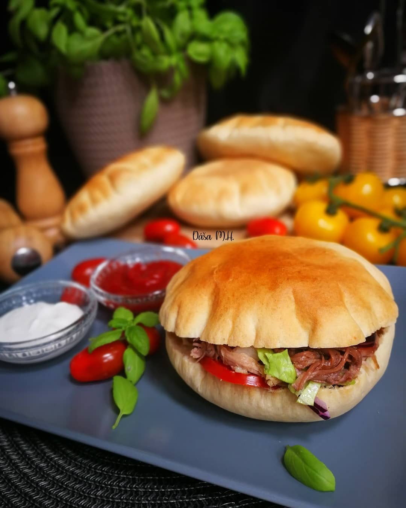

Hovädzie mäso podľa @ako_laska_sladka — Normy Jedál
Nedeľa na inú nôtu...??? A prečo nie...2druhy mäsa (hovädzie a bravčové)pozvoľna dusené 6hodin a k tomu domáce pita chleby 💪
Hovädzie a bravčové mäso očistíme, osolíme a dáme gyros korenie... dáme na plech dookola cesnak a podlejeme vodou a zakryjeme alobalom... pečieme na 180°C do úplného zmaknutia mäsa.. počas pečenia otáčame...
Pita chlieb:
400g hladkej múky
2pl jogurtu
2pl oleja
21g droždia
125ml mlieka
50ml vody
1kl kr.cukru
1kl soli
Všetky suroviny zmiešame a necháme kysnúť 1hodinu...po vykysnutí cesto rozdelime na 5častí... necháme 20minut podkysnúť... vyvaľkáme placky s hrúbkou 0.5cm dame na plech s papierom na pečenie... potrebujú miesto...(3 som davala na 1plech) pečieme na 230°C 8-10minut...musia byt do zlatista...ak by bol vrch tvrdší, stačí jemne pretriet vodou...po upeceni dat na podlozku vychladnúť... studené dať do sáčika..
Priloha:
Ľadový šalát, uhorka, rajčina, cibuľa, dresing, kečup
#pitachlieb #pita #zelenina #dresing#kecup #hovadziemaso #hovadzie #bravcovemaso #obed #lunch #dusenemaso #vikend #spolunamjenajlepsie